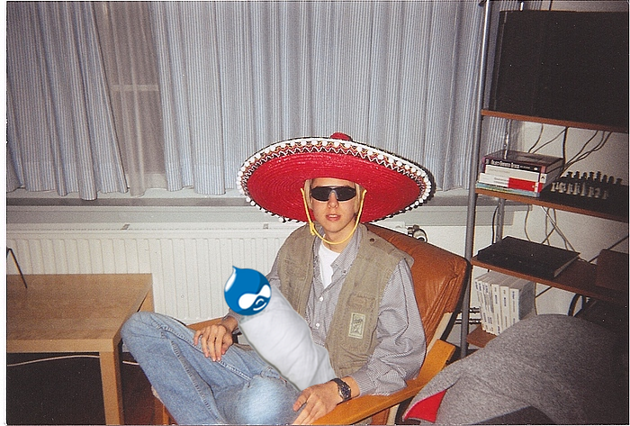
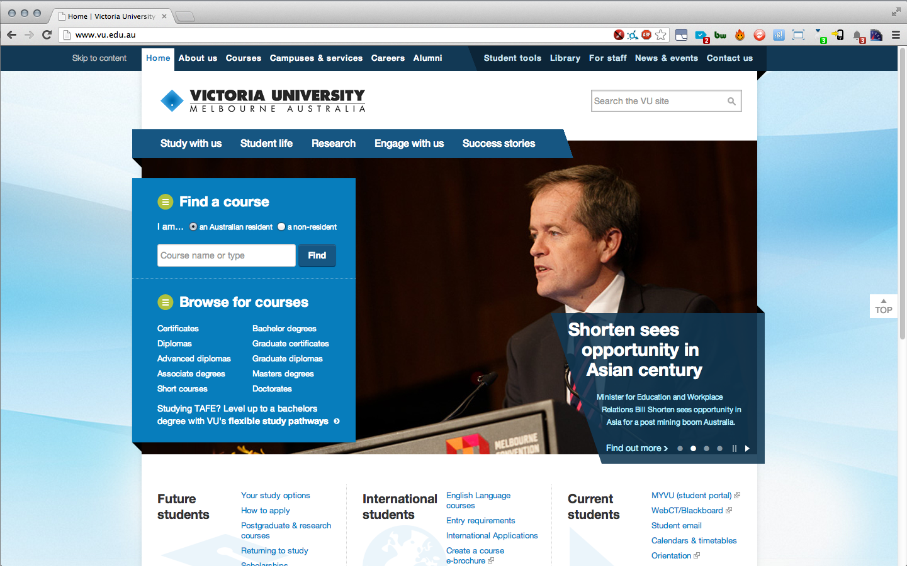
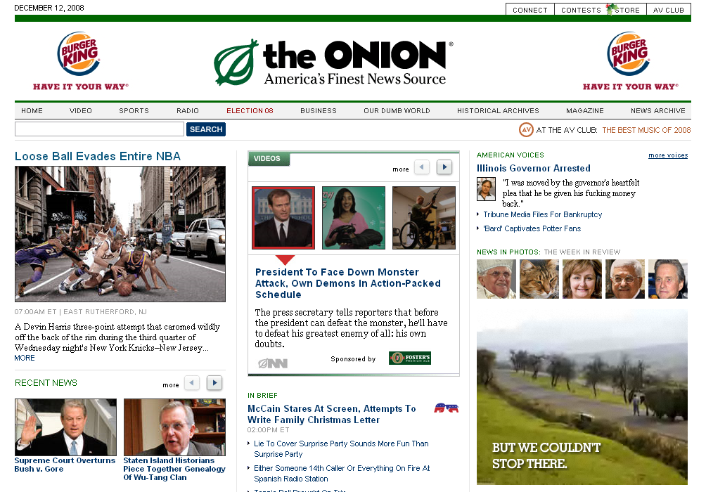
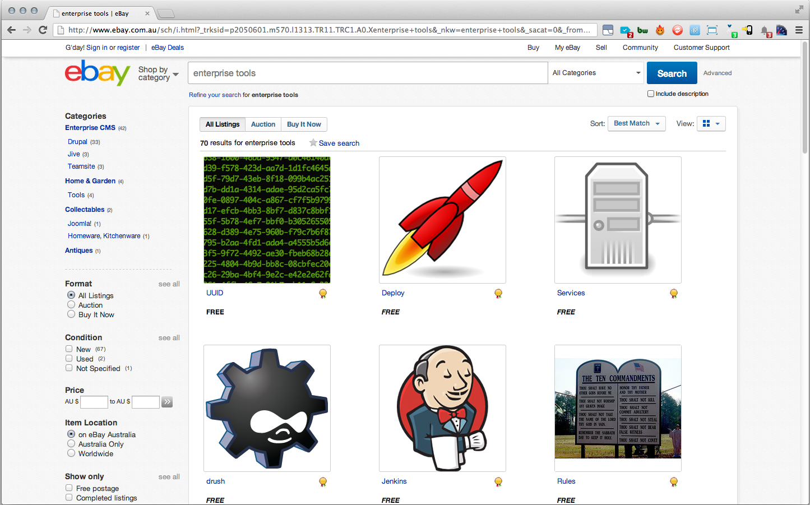
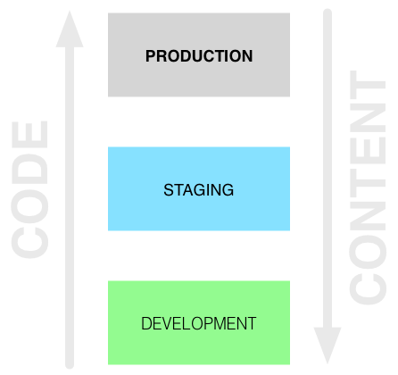
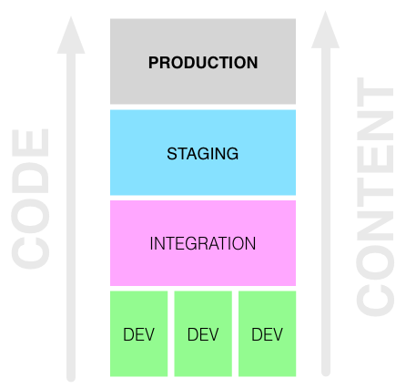
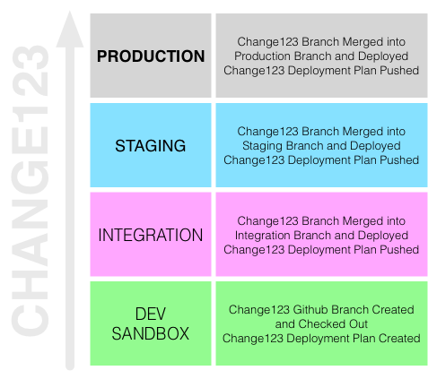

WFTools FTW
@ Pfizer
Who are we?
- IT Consultant
- Drupalista
- Webapp Hacker
- Sys Admin
- Fat opinionated bastard
Who are we?
- Acquia Technical Consultant
- Drupalista
- Systems Architect
- Large Scale Migration Specialist
- NOT Dries (just to eliminate any confusion)
<ins cite="http://intranet/policies">disclaimer</ins>
Disclaimer
This presentation outlines a general technology direction. Pfizer Inc has no obligation to pursue any approaches outlined in this presentation or to develop or use any functionality mentioned in this presentation. The technology strategy and possible future developments are subject to change and may be changed at any time for any reason without notice.
We're going to tell you a story.
Once upon a time,
a little boy called Dries lived in Belgium.

While at uni Dries had a little baby called Drupal.
Drupal started to grow.

Like many kids Drupal started doing odd jobs.
While at high school Drupal got a part time job.
Eventually Drupal made it to uni.
After graduating Drupal got a job in the media.
One day a big corporation rang Drupal and offered it a job.
Drupal accepted.
On the first day Drupal turned up for work,
and it was clear Drupal didn't quite fit in.
Drupal was used to doing everything on production.
One day Drupal's boss called and told it to go buy some new tools.
Drupal started searching for new tools.
The next day Drupal's new tools arrived.

UUID
Deploy
Services
drush
Features
git
Jenkins
Custom Entities
Drupal's boss was impressed.
We called Drupal's new toolbox WF Tools.
And they all deployed happily ever after.
Why do you need WF Tools?
Standard Drupal Workflow: Code goes up, Content comes down (sometimes).
How often does Staging really reflect Production?
How do you preview content on Staging if you are entering it on Production?
How do you audit and approve your code or content changes?
How do you preview code changes independently?
What if your new Production content depends on an upcoming code change that's only on Staging? How do you bundle these 2 together into a single deployment?
What if you have more than one code change you need to preview on Staging but push to Production independently?
How do you test your code deployment?
What if you don't want people logging into Production to make content changes?
WF Tools provides an answer for all this
WF Tools Workflow: Code goes up, Content goes up.
Staging is always current with Production.
Preview your content in context on Staging, Integration or your Development Sandbox.
WF Tools bundles any arbitrary set of changes into a "job".
WF Tools allows users to approve the changes in the job each step of the way in a fully auditable process.
Having a development sandbox per job lets you work on each change independently.
Group code changes with content changes in your development sandbox so both get promoted together.
Push any number of jobs to your Staging server, but only push a single job up to Production when you're ready.
Every time you move a job up to the next environment, you are fully testing how you will deploy to Production.
WF Tools gives you the ability to create, edit, preview and push content without ever logging into Production.
How does WF Tools work?
Let's describe a job called "Change123"
WF Tools manages the journey of "Change123" across different environments.
Here's how "Change123" begins
- WF Tools spins up a new dedicated drupal sandbox called change123.dev.site.com
- WF Tools creates a git branch named "change123" and checks it out on the sandbox
- WF Tools creates a deployment plan in the deploy module called "change123" and automatically adds any saved entities to it
- The developer or content editor makes their changes in the sandbox
- Once the changes are ready, the job is ready for promotion to the next environment
"Change123" is now ready to be pushed up to the Integration environment for verification.
- WF Tools merges the "change123" git branch into the "integration" git branch and pushes it to the Integration server
- WF Tools triggers the "change123" deployment plan to be pushed to the Integration server
- The developer or content editor looks at their changes merged into the Integration server, and approves them to be pushed up to the Staging environment
From there, the same merge/approval happens on Staging before being pushed to Production.
All of the jobs' statuses are tracked in WF Tools. You can tell at a glance which jobs are in which environments, and which are ready for approval.
And they all deployed happily ever after.
Pfizer heard about what Drupal could do.
At Pfizer Drupal worked hard.
Drupal ran 300+ sites at Pfizer,
each week there was almost 3 new sites.
Pfizer needed Drupal's new toolbox.
DEMO
And they all deployed happily ever after.
THE END
Questions
Connect with Dave
Connect with Tim
Copyright

WFTools FTW by Dave Hall is licensed under a Creative Commons Attribution-NonCommercial-ShareAlike 3.0 Australia License.
Based on a work at github.com.
Image Credits
- Dave Arrest by Tim Holt
- Book image by Frisno
- Young Dries, by Buytaert Family, altered by Dave Hall
- Dries in dorm, by Dries Buytaert, altered by Dave Hall
- First day at school by play2smee altered by Dave Hall
- Victoria University screenshot, created by Dave Hall
- The Onion screensot, created by Just Skins
- Hipster office worker by malingering, altered by Dave Hall
- Rocket illustration by Crystal Space Community via wikimedia
{kind=link}